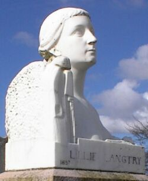

Le Ménage ès Feuvres,
St. Ouën.
Lé 23 d'juîn, 1973
Moussieu l'Rédacteu,
 Comme j'èrgardais la belle tête en marbre dé nouot' fanmeuse Lillie Langtry sus sa tombe dans l'chînmtchiéthe dé l'églyise dé St. Sauveux l'aut' jour, i' m'vîns à l'idée comment qu'oulle 'tait fanmeuse partout l'monde, pon seulement ichîn (où'est qu'ou fut née l'treize d'octobre, 1853) mais en Angliétèrre et en Améthique.
J'allis vaie l'film "The Life and Times of Judge Roy Bean" à San Antonio, Texas, viyant qué j'savais bein qué l'compliot 'tait entouorre l'admithâtion du Juge Bean pour Lillie Langtry ouaithe tch'i' n'eut janmais l'bonheu d'la vaie. J'viyais dans l's annonces dans la gâzette des preunmié jours dé mai tch'i' fut montré au "Forum" en Jèrri étout. Nou pouvait quâsi r'gretter, en viyant sa visite à Langtry, ville nommée pour lyi, quand l'pistolet du Juge lî fut présenté, tch'il avait mouothi sans aver ieu l'pliaîsi d'la rencontrer.
Eune anmie Jèrriaise en Australie, Mdlle. Ethel Devenish, tchi d'meuthe à Melbourne, me raconte dans ieune dé ses lettres qué san p'pèe, né en 1856, li'avait dit dans san vivant qué ses fréthes, à Lillie, 'taient farceurs et qu'iun d'ieux, couvèrt auve un lîncheu, faîsait peux au monde au sé. Eune séthée il êffriti l'porteux d'lettres - tchi laîssit couorre sa poutchie d'lettres dans la route et happit la pathe pour siez-li. Chutte fais-là, la police s'en mêlit et l'janne Le Breton, eut à s'comporter comme i' faut.
La m'mèe à Mdlle. Devenish, née Annie Pallot, à Grouville, 'tait à apprendre à couôtre siez Mdme. Henri, la couotuthiéthe ès Le Breton. Étant d'la mème hauteu et corpothence dé Lillie, Mdlle. Pallot eut à sé t'nîn d'but dans sa robe dé mathiage, à Lillie, quandi qu'Madanme Henri 'tait à couôtre pèrles et paqu'nôtes dessus. V'la tchi duthit trais heuthes dé temps et n'en pouvant pus, Mdlle. Pallot s'êvannit. Mdme. Henri mênagit d'l'empèchi d'tchaie, mais oulle 'tait pus gènée d'la robe qué dé s'n apprentie. en fîn d'compte, i' pathaît qu'Lillie n'mînt pon chutte robe-là pour sé mathier, mais qué ch'tait d'dans qu'ou s'habilyit pour êt' présentée au prînce et à la Prîncêsse dé Galles.
Comme touos les vrais Jèrriais, Lillie Langtry n'oubliyit janmais san p'tit pays d'naîssance ni l'églyise dans tchi qu'ou fut bâptîsie, et ou fut mathiée d'dans deux fais, la preunmié fais lé neuf dé mar, 1874, à Edward Langtry, et la deuxième fais l'27 juilet, 1899, à Messire Hugo Gerald de Bathe tchi n'avait qu'28 ans. Et ch'tait dans l'chînm'tchiéthe dé ch't églyise-là qu'ou fut entèrrée en févri, 1929.
Dans eune aut' gâzette du mais d'mai - j'pense qué ch'tait la cheinne du 26 - j'viyais qu'Madanme Dû Banc et l'Sieur Brezhnev ont tchiquechose en bouan rapport. Pensant qu'ou pouôrrait p't êt' faithe sèrvi sa connaîssance dé chu moussieu-là pour v'nîn en aîgue au Président Nixon tch'est en train d'faithe des bardgîns auve li, j'mé mîns à liéthe l'articl'ye au sujet et j'fus surprîns qu'les rapports entre la danme et Moussieu Brezhnev 'tait eune affaithe feunmâtcheuse! Comme i' n'y a pon d'feunmée sans feu, ch'est bein seux qué l'Président Nixon né veurt pon en alleunmer dé peux qu'la feunmée enfeunmâtchîsse ses projets d'distchussion pour lé bein d'l'Améthique! Mais pâlant d'tchitter à feunmer, v'la tchi m'a tréjous pathu drôle qué dé l'faithe veurt dithe qué v'la tch'engraîsse les cheins tchi tchittent. J'tchittis à feunmer y'a eune vîngtaine d'années et v'la tchi n'm'engraîssait pon du tout!
En pâlant d'feunmâtchi m'ramémouaithe qu'en visite en Russie j'viyais bein p'tit d'monde feunmer. Sachant qu'là les nécessités d'la vie n'couôtent pon fort pus qu'dans d'aut' pays, mais qu'chein tch'est considéthé n'êt' pon nécessaithe couôte bein pus, et pensant qu'lé p'tun 'tait probabliément dans la catégorie du luxe, jé d'mandis à nouot' dgide si ch'tait là la raison qué nou viyait si p'tit d'feunmeurs. "Nannîn," i' m'dit, "ch'n'est pon l'prix du p'tun tch'en est la raison. La raison est qu'la feunm'thie n'est pon nécessaithe!"
I' m'sembl'ye qu'les femmes feunment pus qu'les hommes à ch't heu. J'en ai souvent veu la preuve. Quand j'tais en c'mîn d'Fort Lauderdale en Floride l'mais pâssé dans eune lînmousinne pour aller aborder l'avion à Miami pour lé Texas, j'tions quatre hommes et chîn femmes dans la lînmousinne. J'avais ieune des femmes à côté d'mé et y'en avait deux dans l'banc en d'vant d'mé. I' feunmîdrent des cigarettes toutes les trais tout l'long du c'mîn. J'fus bein enfeuntchi! Et les docteurs Améthitchains dîsent qué ch'est aussi malsain d'heunmer la feunmée d'cigarettes comme d'en feunmer sé-mème. Chose èrmèrquabl'ye est tch'i' n'y avait pon un seul feunmeux parmi les quatre hommes. Heutheusement pour mé tchi fait hardi d'longs viages par avion, quâsi touos les grands avions transatlantiques ont eune section rêsèrvée pour les cheins tchi n'feunment pon.
Viyiz étout: